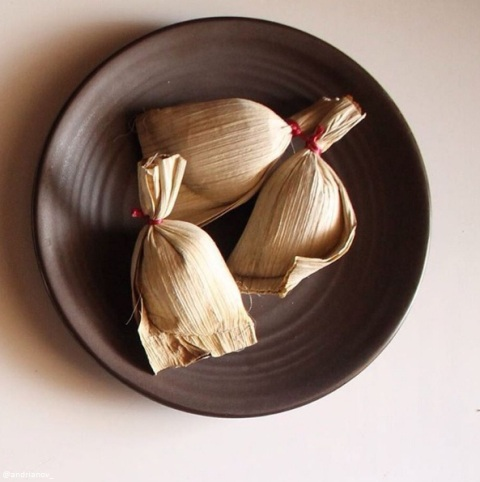
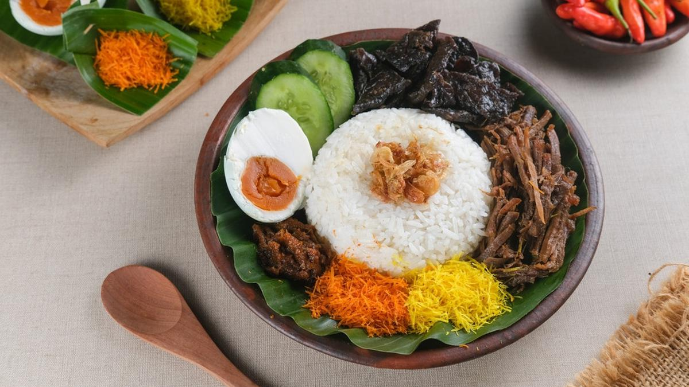
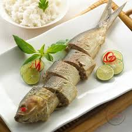

Gresik Local Food
|  |
Pudak Traditional snack made from rice flour, sugar, brown sugar, and coconut milk, wrapped with pinang leaf. |
|  |
Nasi Krawu Warm rice served with shredded beef, serundeng, and chili sauce. |
|  |
Otak-otak Bandeng Fish cake made from milkfish, a popular fish variety in Gresik. |